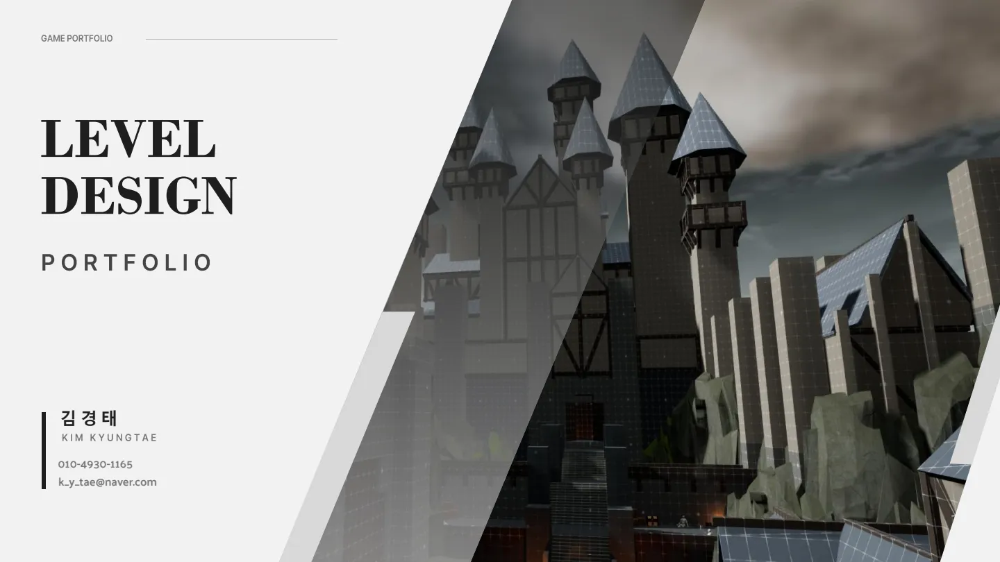

01 / LEVEL DESIGN
액션 RPG 레벨 디자인
동선과 전투 학습, 적 배치를 통해 탐험의 흐름을 설계했습니다.
작업 내용 · 공간 구성, 전투 경험, 플레이 흐름

문서 열람 ↗LEVEL DESIGN · UNITY
공간 구성과 플레이 동선을 영상으로 먼저 확인한 뒤, 아래에서 세 개의 기획 문서를 열람할 수 있습니다.
공간의 동선과 시야, 전투 배치를 통해 플레이어가 자연스럽게 탐험하고 다음 목표를 찾도록 구성했습니다.
DESIGN DOCUMENTS
표지 또는 열람 버튼을 누르면 원본 PDF가 열립니다.
동선과 전투 학습, 적 배치를 통해 탐험의 흐름을 설계했습니다.
작업 내용 · 공간 구성, 전투 경험, 플레이 흐름

문서 열람 ↗침식과 정화, 패턴 대응을 통해 위험과 보상을 조절하는 전투 경험을 설계했습니다.
작업 내용 · 전투 규칙, 보스 패턴, 대응 구조
 문서 열람 ↗
문서 열람 ↗공통 FSM과 몬스터별 데이터를 바탕으로 행동 조건과 상태 전환을 정의했습니다.
작업 내용 · 상태 정의, 전환 조건, 몬스터별 행동
 문서 열람 ↗
문서 열람 ↗로스트아크 관련 문서는 개인 포트폴리오용 기획입니다.